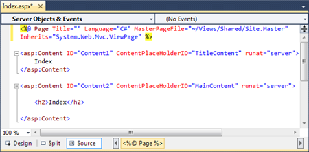
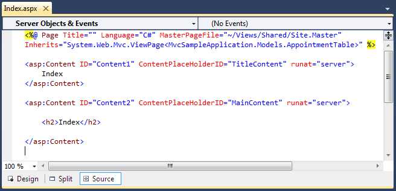

If you create a view and later need to convert it to a strongly-typed view, the process is quite simple. Change the "Inherits" statement in view declaration from
System.Web.Mvc.ViewPage to System.Web.Mvc.ViewPage<YourNamespace.YourClass>.
Here our model is “MvcSampleApplication.Models.AppointmentTable”. Therefore update the index page as given below.
|
View[aspx] <%@ Page Language="C#" MasterPageFile="~/Views/Shared/Site.Master" Inherits="System.Web.Mvc.ViewPage <IEnumerable<MvcSampleApplication.Models.AppointmentTable>>" %>
|
|
View[cshtml] @model IEnumerable<ScheduleMVC.Models.AppointmentTable>
|

Figure 153: Default Index View

Figure 154: Strongly typed Index view